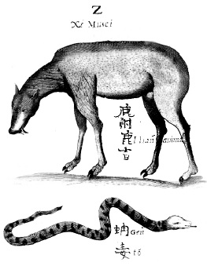

ŞEKİL 39. Michal Boym’un Flora sinensis, fructus floresque (Çin Bitki, Meyve ve Çiçekleri) (Viyana, 1656) adlı eserinden Çin misk keçisi ile Çince’de “Gento” diye adlandırılan ve söylentiye göre başından yılantaşının çıkarıldığı yılan.84
Heinrich Roth bir keresinde bir akrep tarafından elinden sokulan bir hizmetkârı üzerinde, bir kez de çıbanlı bir adam üzerinde olmak üzere bu taşı Hindistan’da iki kez başarıyla kullanmıştır. Kircher, yılantaşını 1663 yılında Roma’da “şaşkın izleyiciler önünde” bir engerek yılanı tarafından ısırılan bir köpek üzerinde sınamış ve deney sonucunu China monumentis illustrata’da şu şekilde betimlemiştir: “Bu taş, köpekteki yılan ısırığının yerine yerleştirildiğinde taş yaraya, onu güçlükle uzaklaştırabileceğimiz bir şekilde yapışmış ve orada uzun süre tutulu kalmıştır. Sonunda tüm zehiri boşalttıktan sonra kana doymuş bir halde o yeri bırakmıştır. Köpek, zehirden kurtulmuş ve birkaç gün sonra eski sağlığına kavuşmuştur”.
Benzer bir deney, hasat mevsiminde bir engerek tarafından ısırılan bir işçi üzerinde Kircher’den bağımsız olarak Roma’lı Carlo Magnini tarafından gerçekleştirilmiştir. Buna göre işçiye yapıştırılan taş iki saat sonra kanla doygunluğa erişip düşmüş ve adam bir süre derin bir uykuda kaldıktan sonra yavaş yavaş kendine gelmiş, kimi kalp ilaçları verildikten sonra eski sağlığına geri dönmüştür.
Kircher, Magneticum naturae regnum sive disceptatio physiologia (Doğanın Manyetik Dünyası ya da Fizyoloji Tartışması) (Roma, 1667) adlı eserinde de yılantaşı konusunda bilgi vermiştir. Bu eserinde temelde evrendeki gizemli manyetik kuvvetleri işlemiş olmakla birlikte yılantaşına, toksikolojinin yoğun bir sistematik öğretisi içinde yer vermiştir. Hermetik kozmolojik düşüncelerden ve Jan Baptista van Helmont’un hastalıklara ilişkin düşüncelerinden derinden etkilenen Kircher, zehirli bir yılanın doğal bir ürünü olan yılantaşının gücünü açıklamak üzere benzer kuvvetlerin birbirini çektiği yönünde bilinen kavramı kullanarak dolaşan kandaki toksik ruhların bu taş tarafından manyetik ve sempatik yolla çekildiğini açıklamıştır. Daha önceki Mundus subterraneous (Yeraltı Dünyası Üzerine) (1665) adlı kitabında Kircher, zehirlerin doğal etkisine ilişkin kuramını kurmuştu. Paracelsus’un benzer maddelerle tedavi öğretisinden esinlenerek tüm zehirli hayvan, mineral ve bitkilerin, tıpkı demirin mıknatıstaşı tarafından çekilmesi gibi, diğer zehirleri kendilerine çekeceğini varsaymıştı.
Günümüzde bile kimi yerlerde uygulandığı üzere manyetizma, Ortaçağ’da cadılığa karşı def edici bir güç olarak kullanılmış, yanı sıra delilik ve uykusuzluk derdinin tedavisinde ve zehirlere karşı panzehir olarak mıknatıs ya da manyetik demirtaşı şifa aracı olarak kullanılmıştır.
Avrupa’da tiryak, tıpkı “mithridatum” gibi, engereğin ve bitkilerin karmaşık bir bileşiği idi. Tiryak 17. yüzyılın en saygın ilaçlarından biri olup yalnızca yılan ısırmasına değil bedende su toplanmasına, sara hastalığına, melankoliye ve koleraya karşı da kullanılıyor, çoğu hekim onun dikkate değer şifa verici ve hastalıklardan koruyucu güce sahip olduğuna inanıyordu. Homeopati ilkeleri, zehirli yaratıkların niçin özel olarak hayvan zehirine karşıt (panzehir) bir güce sahip olduğunu açıklar. Buna göre zehirler ve panzehirler, özellikle yılanların kolayca çoğalabildiği çok sıcak iklim bölgelerinde bol bulunurlar.
Redi, zehirli yılanlarla ilgili olarak 1664 yılında yazdığı bir eserde özel olarak yılantaşını ele almamış, ithal edilen egzotik kaynaklı ilaçları (uzun ömür verici “ginseng”, baş dönmesi için fil kılları, damla hastalığı için kuş yuvası, sağırlığa karşı toz halindeki armadillo kabuğu vb.) tartışmıştır. Redi ilk deneylerinde başka bir zehir olarak tütün yağını da incelemiştir. Daha sonraki deneyleri, ona yılantaşının hiçbir değeri olmadığını kesin bir şekilde göstermiş ve yılantaşı ile tedavi etmeye çalıştığı zehirlenmiş her hayvan, sonunda ölmüştür. Redi engerek zehirine ek olarak Tunus’tan sağladığı zehirli akreplerle de deneyler yapmıştır. Bu zehirleri yabani güvercinler, çiftlik tavukları ve beç tavukları üzerinde de denemiştir. Tüm bu deneyler sonucunda, taşların panzehir etkisi konusunda hiçbir değerinin bulunmadığı sonucuna varmıştır. Bu bulgulara, Kircher’in öğrencisi ve asistanı Giuseppe Petrucci yanıt vererek ustasını savunmuştur. Petrucci ayrıca, Redi’nin, deneylerinde kullandığı Floransa yılantaşlarının hileli ve güçsüz taklitler olduğu için başarısız olduklarını belirtmiştir. Kircher’in, yılantaşını geceleyin zehirli bir böcek ya da örümcek tarafından sokulan ünlü Cizvit vaiz Giovanni Andrea Savini’ye başarıyla uyguladığı da belirtilmiştir.
Redi’nin Medici sarayındaki konumu, deneyci olarak, toksikolojik sınamalar için gerekli zehirleri ve canlı hayvanları bulma konusunda Kircher’e oranla büyük bir üstünlük sağlamaktaydı. Medicilerin büyük dükünün köpeklere karşı aşırı bir düşkünlüğü vardı ve Redi de bu nedenle şanslıydı. Duka II. Cosimo de’ Medici (1590-1621), babası ve büyükbabası gibi, içlerinde devekuşu, ayı ve filler de yer alan egzotik hayvanların ender koleksiyonuna çok emek vermişti. Redi, Mısır krokodilleri ve dev deniz kaplumbağaları gibi yabancı yabanlar üzerinde yapılan açımlamalardan (diseksiyon) haberdardı ve ayrıca Napoli’den sandıklar dolusu engerekler ve Tunus’tan akrepler getirtiyordu. Redi, Toskana’da saray hekimi olarak işlerini yürütürken, Kircher Roma’daki Cizvit kolejinde kâtip olarak çok farklı bir yaşam sürüyordu. Bu nedenle de Kircher’in, araştırma koşulları bakımından Redi’ye göre büyük eksiklikleri vardı. Kircher de çok uzun süre, Medicilerin desteğini alarak Floransa’da çalışmanın yollarını aramıştı. Bu amaçla çeşitli kitaplarının kopyalarını, kendi engin bilgisinin kabul görmesi umuduyla Medicilere göndermişti. Yine bu amaçla, çok hacimli eseri Oedipus Aegyptiacus’u (Mısır’lı Oedipus) (1652-54) Medicilerin büyük dükü ile Cosimo’nun kardeşi ve aynı zamanda Accademia del Cimento’nun kurucusu olan Leopoldo de’ Medici’ye (1617-1675) ithaf etmişti. Kircher, Cizvit dostlarına katkıda bulunarak bilimsel doğruların keşfine ve “İsa’nın Krallığı”nın geliştirilmesine çaba harcamaktaydı. Bu nedenle onun Çin konusundaki eseri, yalnızca orada bulunan uygarlığı ve doğal ilginçlikleri kaydetmekle kalmamış, aynı zamanda da Cizvit misyonerlik programının reklamını da yapmıştır.84
Kircher’in yazmalarından, Collegio Romano’da eczacılık konusunda da çalışmalar yapıldığı ve Cizvitlerin burada hazırlanan ilaçları denetledikleri anlaşılmaktadır. 1656’da Roma’da kolera salgını çıktığında Kircher, salgının seyri konusunda Van Helmont’un görüşlerini temel almıştır. Buna ilişkin eserinin adı Scrutinium physico-medicum contagiosae luis quae dicitur pestis’tir (Veba Adı Verilen Bulaşıcı Hastalığın Fiziko-Medikal İncelemesi) (1658).
Yılantaşı konusundaki tartışmalardan on yıl kadar önce, sıtmanın biricik ilacı kinini içeren kınakına kabuğu, sıtma ateşinin tedavisi için Avrupa’ya yaygın bir şekilde girmişti ve bunun Güney Amerika’daki ormanlardan toplanıp Avrupa’da pazarlanmasına kadar denetimini üstlenen Cizvitler, bu işten çok kazançlı çıkmıştı. Bu yeni ilaç Cizvit misyoner ve Cizvit eczacılarla öylesine bütünleşmişti ki, yaygın olarak “Cizvit kabuğu” (“Jesuits bark”) ya da “Cizvit tozu” diye bilinir oldu. Cizvitler ayrıca pek çok yeni egzotik maddeyi de pazarlamaktaydılar; örneğin kimi Cizvitler, kanamayı durdurmak ve aşırı iştahı dizginlemek amacıyla sokakta hipopotam dişi bile satıyorlardı. Ancak hiçbir Cizvit, bir hekim olarak üniversite eğitimi görmemişti. Redi ise kendi çağdaşı olan üniversite eğitimi görmüş hekimler gibi, ayrıntılı incelemeler eşliğinde beslenme, karmaşık yapılı mineral sular, kan alma, bağırsakları boşaltma, karmaşık şuruplar, haplar ve bitkisel ve hayvansal maddelerin karışımından çorba türü içecekler salık vermeye çalışmıştır. Redi, Van Helmont’çuların başını çektiği, çok hızlı etkiyen mineral temelli ilaçlara gönülsüzce yaklaşmış ve bunun yerine eşek sütü, zehir katılmış şarap, kişniş otu, ebegümeci yağı, nar kabuğu, geyik boynuzu jelâtini ve Çin tarçını lapası gibi en geleneksel ilaçları yeğlemiştir. 84
Kircher, denizaşırı ülkelerde yaşayan Avrupalı Cizvitlerin gözlemlediği doğal olgulara ilişkin raporlara başvurmaktaydı. Çin konulu eserinde Kircher, Cizvit arkadaşlarının ona gönderdiği, doğanın ilginç yaratıklarına ve tuhaf olaylarına ilişkin öyküleri işlemeye yönelmiştir (ŞEKİL 40).